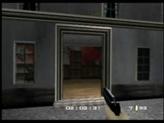

Hmmm... Un Niveau qui me laisse plutot Froid dans l'ensemble. Allons-y...
Contacter Valentin : Secret Agent / 00 Agent
Une fois dans la Rue proprement dite, prenez à Gauche, et vous serez dans une sorte d'Avenue. Continuez, et après etre passé sous une sorte de pont-batiment, vous aurez sur votre Gauche une entrée. Valentin est dans le Batiment. Causez-lui et l'Objectif est rempli ! Note - Si vous avez le Tank, suivez la Route normale, et prenez à Gauche dès que vous le pouvez. Derrière la Voiture Blanche au fond, vous trouverez un passage ramenant au Batiment de Valentin (et à celui du Gilet + Lance-Grenades).





Vous pouvez entrer par la Fenetre de Gauche ou de Droite. Gaffe aux Gardes à l'interieur du Batiment !


Poursuivre Oroumov et Natalya et Minimiser les Pertes Civiles : Tous Niveaux
En fait, vous devez simplement "faire" le niveau et basta. Pour la Route à suivre, c'est simple. Prenez à Droite au début du Niveau, puis toujours à Gauche dès que vous le pouvez ! Attention aux Roquettes des Gardes, et à ne pas écraser trop de Civils...